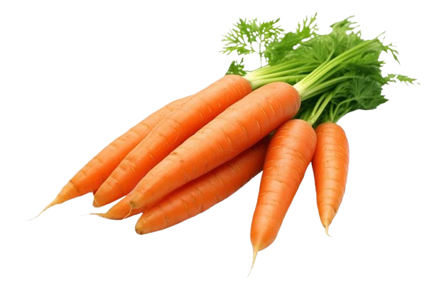
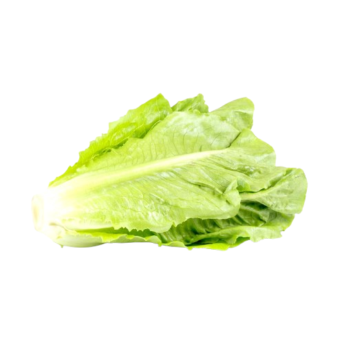
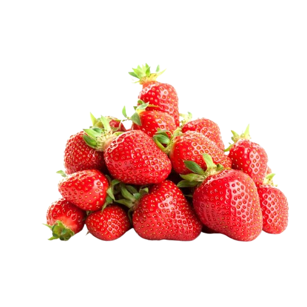
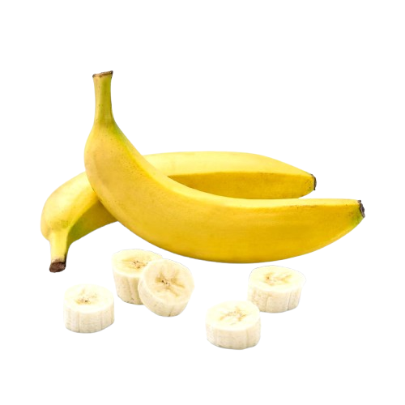

Fresh & Natural Organic Selection
Our store offers a variety of fresh organic products that are carefully selected to ensure the best quality.
These products include fruits, vegetables, and natural items that are free from harmful additives. They are rich in nutrients and support a healthy lifestyle.

Fresh organic apples that are naturally grown and full of vitamins.
They have a sweet tatse and are perfect for a healthy lifestyle.

Fresh organic milk that is natural and rich in calcium, perfect for a healthy lifestyle.

Fresh organic eggs from free-range chickens raised in a natural environment. They are rich in protein and nutrients, making them perfect for healthy and balanced diet.

Natural organic honey with rich taste, perfect for a healthy lifestyle and a great alternative to sugar.

Fresh organic carrots that are rich in vitamins and good for eye health.

Light and crunchy, low in calories and good for digestion.

Fresh and juicy, high in vitamin C and antioxidants.

Naturally sweet and rich in potassium. Great for quick energy.
| Product name | Category | Price | Benefits |
|---|---|---|---|
| Organic Apple | Fruits | 10 SR | Rich in vitamins |
| Organic Milk | Dairy | 15 SR | Good for bones |
| Organic Eggs | Dairy | 17 SR | high in protein |
| Organic Honey | Natural products | 30 SR | Gives energy |
| Organic Carrots | Vegetables | 5 SR | Good for eye |
| Organic Lettuce | Vegetables | 3 SR | Low calories |
| Organic Strawberry | Fruit | 8 SR | Rich in vitamin C |
| Organic Banana | Fruit | 5 SR | High in potassium |